suivant: Intégration par parties :
monter: Intégration
précédent: Somme indicée finie et
Table des matières
Index
Somme de Riemann : sum_riemann
sum_riemann a deux arguments : une expression dépendant de
deux variables et la liste des noms de ces deux variables.
sum_riemann(expression(n,k),[n,k]) renvoie un équivalent, au
voisinage de n = +  , de
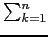expression(n, k) ou de
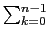expression(n, k) ou de
, de
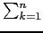expression(n, k) ou de
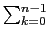expression(n, k) ou de
 expression(n, k),
lorsque la somme considérée est une somme de Riemann associée à une
fonction continue sur [0,1] ou répond quand la recherche a été
infructueuse "ce n'est probablement pas une somme de Riemann" .
expression(n, k),
lorsque la somme considérée est une somme de Riemann associée à une
fonction continue sur [0,1] ou répond quand la recherche a été
infructueuse "ce n'est probablement pas une somme de Riemann" .
Exercice 1
Soit
Sn = 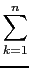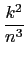.
Calculer
 Sn.
Sn.
On tape :
sum_riemann(k^2/n^3,[n,k])
On obtient :
1/3
Exercice 2
Soit
Sn = 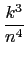.
Calculer
Sn.
On tape :
sum_riemann(k^3/n^4,[n,k])
On obtient :
1/4
Exercice 3
Calculer
( + 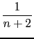 + ... + 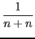).
+ 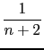 + ... + 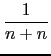).
On tape :
sum_riemann(1/(n+k),[n,k])
On obtient :
log(2)
Exercice 4
Soit
Sn = 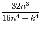.
Calculer
Sn.
On tape :
sum_riemann(32*n^3/(16*n^4-k^4),[n,k])
On obtient :
2*atan(1/2)+log(3)
Documentation de giac écrite par Renée De Graeve